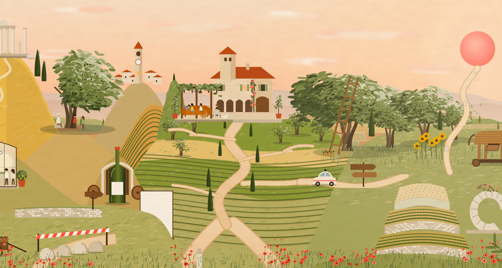
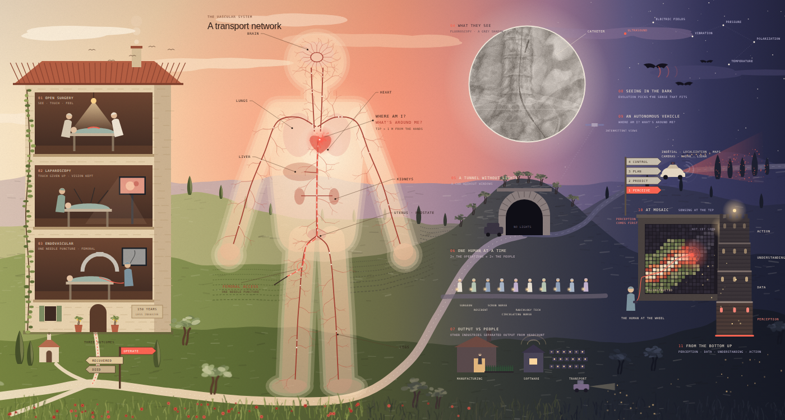

from the bookshelf
Writing
I write to think, mostly about technology, civilization and why I'm hopeful about where we're headed. Everything here also goes out on my Substack.
-
Rabbit Hole
Rabbit Hole #4: Leveraging the Plunging Price of Thought
Intelligence is getting cheaper by about 47% every quarter. A walk through one illustrated market town on what that means, who loses, who wins, and why my mom is thrilled.

-
Physical AI
Perception Is All You Need
The Mosaic Intelligence Labs manifesto on why surgical autonomy has to start with perception, illustrated by me as one painted Tuscan valley where every paragraph has its own corner.

-
Physical AI
The Mosaic Story
Surgery spent 150 years becoming less invasive, and now surgeons steer a catheter through the body by a grey shadow. Written by Ileana Pirozzi and illustrated by me as one painted Italian landscape about why perception comes first.

-
Rabbit Hole
Rabbit Hole 3: How Do You License an AI Doctor?
You don't license an AI doctor. You give a specific AI system permission to perform a specific clinical task.
-
Rabbit Hole
Rabbit Hole #2: The Story of Pokémon Go
How a game that got millions of us walking ended up mapping the world for robots, and what it says about the data bottleneck in physical AI.
-
Rabbit Hole
Rabbit Hole #1: The Story of Social Network
From Rome's couriers and London's penny coffeehouses to a social network only AI agents can post on: 2,000 years of how we connect, and what each medium says about us.
-
Essay
The Generational Company Playbook, Part I: Problems that Move Civilizations for Generations
The Civilization Flourishment Index: A Framework to Guide us Forward

-
Essay
The AGI Revolution: So… What Do We Do Now?
We've been here before — just never quite like this. No, really. What are people supposed to do?

-
Essay
Diary of an Over-Thinker
I think too much, often to the point of getting lost. But if I'm already deep in thought, I might as well share them (in case they are useful).